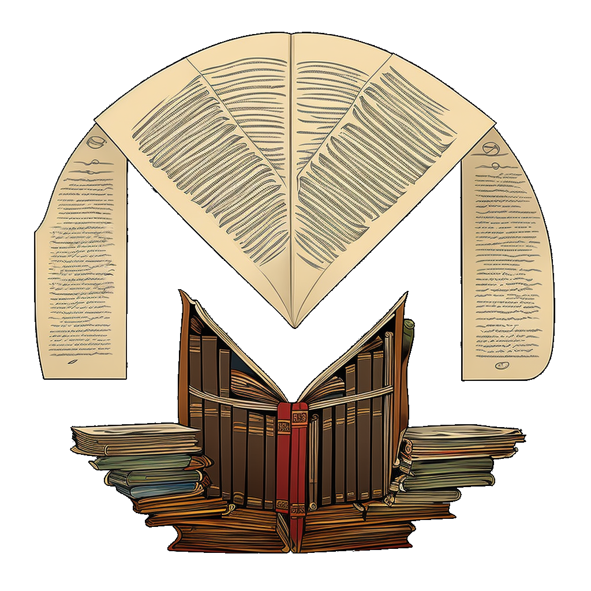

{% extends "main.html" %}
{% block tabs %}
{{ super() }}
<style>
    .md-header{position:initial}
    .md-main__inner{margin:0}
    .md-content{display:none}
    .mdx-hero{
        padding-left: 0.6rem;
        padding-right: 0.6rem;
    }
    @media screen and (min-width: 60em) {
        .md-sidebar--primary{display:none}
        .md-sidebar--secondary{display:none}
        .md-sidebar--secondary:not([hidden]){display:none}
    }
    @media screen and (min-width:76.25em){
        .md-sidebar--primary{display:none}
        .md-sidebar--secondary{display:none}
        .md-sidebar--secondary:not([hidden]){display:none}
    }
</style>
<section class="mdx-container">
    <div class="md-grid md-typeset">
    <div class="mdx-hero">
        <div class="mdx-hero__image">
        
        </div>
        <div class="mdx-hero__content">
        <h1>Non officiel bientôt être officiel Monero Documentation</h1>
        <p>Monero Documentation organise des connaissances techniques sur Monero en un seul endroit.</p>
        <a href="{{ 'fr/getting-started/quick-start' | url }}" title="Quick Start" class="md-button md-button--primary">
            Démarrage Rapide
        </a>
        <a href="{{ 'fr/setup/' | url }}" title="" class="md-button">
            Configuration
        </a>
        </div>
    </div>
    </div>
</section>
{% endblock %}
{% block content %}{% endblock %}
{% block footer %}{% endblock %}
